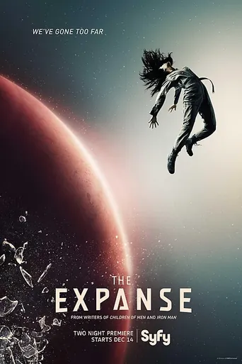

The genetics
The genetic and biological thread of The Expanse is the protomolecule, an alien agent able to take over and reassemble living matter. Instead of reporting its discovery, the corporation Protogen and its backer, the tycoon Jules-Pierre Mao, treat it as a commercial and military opportunity: they infect the entire population of the Eros station to study it, and then use it to make human-protomolecule hybrids as super-weapons, one of which slaughters marines on Ganymede. These corporate scientists are among the series' clearest villains, driven by ambition and profit with no regard for human life. Other scientists, such as the biologist Elvi Okoye, appear in a positive light, but the protomolecule experiments dominate the series' first seasons. The series, praised for its realistic physics, presents the protomolecule as alien technology rather than genetics in the usual sense.
How genetics is portrayed
- Overall portrayal of genetics
- negative Biological experimentation is the work of a corporation willing to sacrifice whole populations for profit and military advantage.
- Outcome of the genetic intervention
- negative The Eros experiment kills most of the station's inhabitants and the hybrids kill soldiers, pushing the Solar System towards war.
- Protogen (Antony Dresden and its scientists)
- villain Aim: military, commercial, curiosity (negative). Protogen infects the people of Eros with the protomolecule to study and weaponise it, killing most of them; the series presents its scientists as conspirators who threaten humanity.
- Jules-Pierre Mao
- villain Aim: commercial, power (negative). The tycoon backs Protogen and develops protomolecule hybrids as weapons, and his schemes contribute to his own daughter's death.
The story
In a future in which humanity has colonised the Solar System and Earth, Mars and the Belt are on the brink of war, the series follows UN official Chrisjen Avasarala, Ceres detective Joe Miller and James Holden, whose crew escapes the destruction of their ice-hauler and takes over a Martian gunship, the Rocinante. Miller's search for the missing heiress Julie Mao and Holden's investigations converge on Protogen, a corporation that has unleashed the protomolecule, an alien bio-weapon, on the asteroid station Eros, killing most of its inhabitants. Protogen's backer Jules-Pierre Mao goes on to make protomolecule hybrids that are tested as soldiers. The protomolecule then builds the Ring, a gateway to other star systems, and later seasons follow the conflicts over newly reachable worlds and the attacks of the Belter rebel Marco Inaros on Earth, defeated in the sixth and final season.